Spline Interpolation and Real-World Data
This demo illustrates use of commands from Curve Fitting Toolbox™ to fit a spline interpolant to real-world data.
Contents
Manual Knot Choice for Spline Interpolation
Here are some data that record a certain property of titanium, measured as a function of temperature. We'll use it to illustrate some issues with spline interpolation.
[xx,yy] = titanium;
A plot of the data shows a rather sharp peak.
plot(xx,yy,'bx');
frame = [-10 10 -.1 .3]+[min(xx),max(xx),min(yy),max(yy)];
axis(frame);
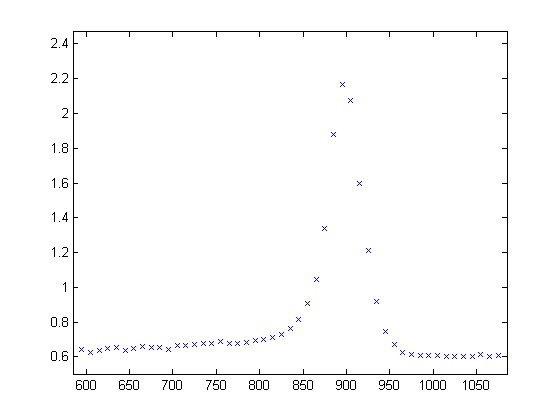 We pick a few data points from these somewhat rough data, since we want to interpolate. Here is a picture of the data, with the selected data points marked.
pick = [1 5 11 21 27 29 31 33 35 40 45 49]; tau = xx(pick); y = yy(pick); hold on plot(tau,y,'ro'); hold off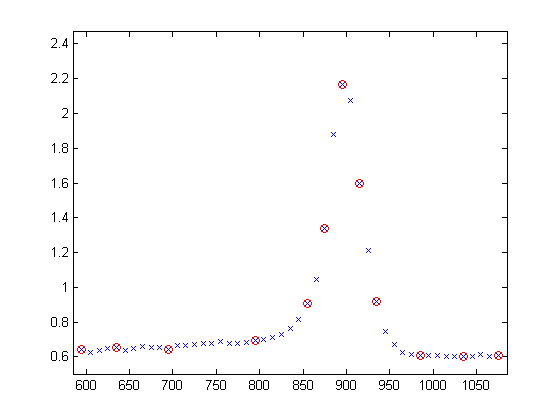
Since a spline of order k with n+k knots has n degrees of freedom, and we have 12 data points, a fit with a fourth order spline requires 12+4 = 16 knots. Moreover, this knot sequence t must be such that the i-th data site lies in the support of the i-th B-spline. We achieve this by using the data sites as knots, but add two simple knots at either end.
dl = tau(2) - tau(1); dr = tau(end) - tau(end-1); t = [tau(1)-dl*[2 1] tau tau(end)+dr*[1 2]]; % construct the knot sequence plot(tau,y,'ro'); hold on axis(frame+[-2*dl 2*dr 0 0]) plot(t,repmat(frame(3)+.03,size(t)),'kx') hold off legend({'Data Values' 'Knots'},'location','NW')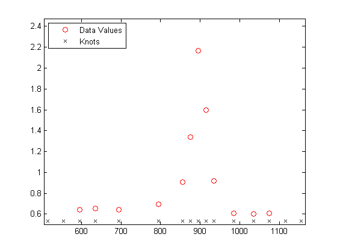
We use this knot sequence to construct an interpolating cubic spline.
sp = spapi(t,tau,y);
Now, for the plot. Since we do not care about the part of the spline outside the data interval, we restrict the plot to that interval.
plot(tau,y,'ro') axis(frame) hold on fnplt(sp,[tau(1) tau(end)], 'k') hold off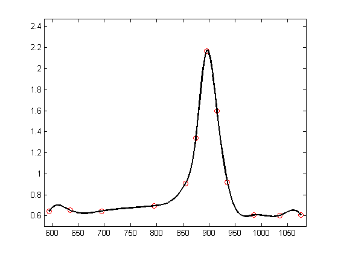
A closer look at the left part of the spline fit shows some undulations.
xxx = linspace(tau(1),tau(5),41); plot(xxx, fnval(sp, xxx), 'k', tau, y, 'ro'); axis([tau(1) tau(5) 0.6 1.2]);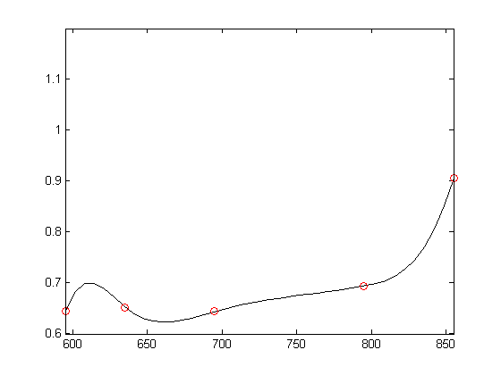
The unreasonable bump in the first interval stems from the fact that our spline goes smoothly to zero at its first knot. To see that, here is a picture of the entire spline, along with its knot sequence and the data points.
fnplt(sp,'k'); hold on plot(tau,y,'ro', t,repmat(.1,size(t)),'kx'); hold off legend({'Spline Interpolant' 'Data Values' 'Knots'},'location','NW')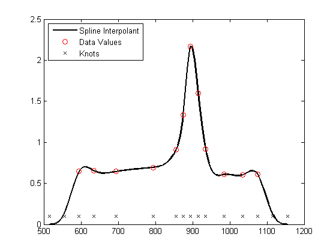
Here is a simple way to enforce a more reasonable boundary behavior. We add two more data points outside the given data interval and choose as our data there the values of the straight line through the first two data points.
tt = [tau(1)-[4 3 2 1]*dl tau tau(end)+[1 2 3 4]*dr]; xx = [tau(1)-[2 1]*dl tau tau(end)+[1 2]*dr]; yy = [y(1)-[2 1]*(y(2)-y(1)) y y(end)+[1 2]*(y(end)-y(end-1))]; sp2 = spapi(tt,xx,yy); plot(tau,y,'ro', xx([1 2 end-1 end]),yy([1 2 end-1 end]),'bo'); axis(frame+[-2*dl 2*dr 0 0]); hold on fnplt(sp2,'b',tau([1 end])) hold off legend({'Original Data' 'Data Added for End Conditions' ... 'Fit with Added Data'},'location','NW')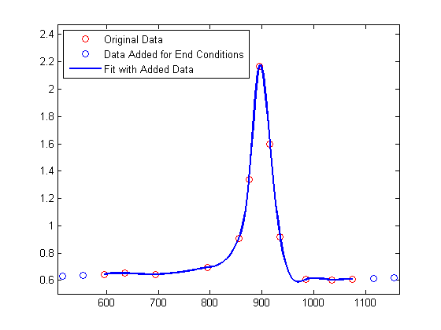
Here is a comparison of the two spline fits, to show the reduction of the undulation in the first and last interval.
hold on fnplt(sp,'k',tau([1 end])) hold off legend({'Original Data' 'Data Added for End Conditions' ... 'Fit with Added Data' 'Original Fit'},'location','NW')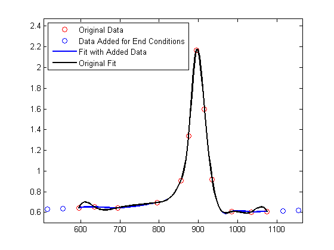
Finally, here is a closer look at the first four data intervals that shows more clearly the reduction of the undulation near the left end.
plot(tau,y,'ro',xxx,fnval(sp2,xxx),'b',xxx,fnval(sp,xxx),'k'); axis([tau(1) tau(5) .6 1.2]); legend({'Original Data' 'Fit with Added Data' ... 'Original Fit'},'location','NW')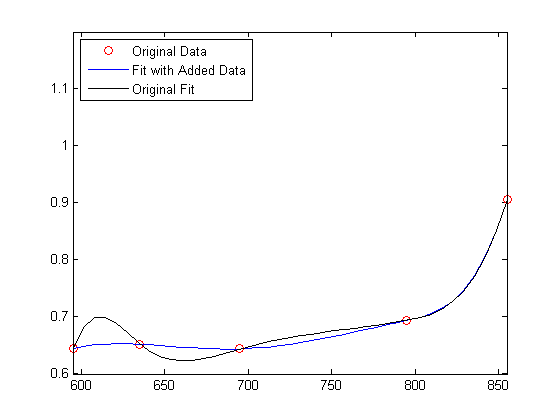
Automatic Knot Choice for Interpolation
If all this detail turns you off, let Curve Fitting Toolbox choose the knots for you. Specify the desired order of the interpolant as the first input argument to the spline interpolation command spapi, rather than a knot sequence.
autosp = spapi(4, tau, y); knots = fnbrk(autosp,'knots'); plot(tau, y, 'ro') hold on fnplt(autosp,'g') plot(knots, repmat(.5,size(knots)),'gx') hold off legend({'Data Values' 'Fit With Knots Chosen by SPAPI' ... 'Knots Chosen by SPAPI'}, 'location','NW')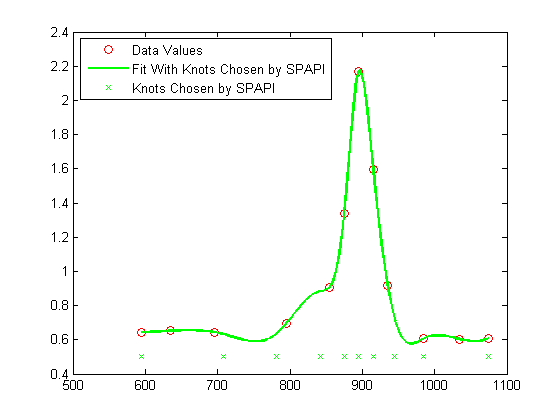
Below is the result of a much better knot choice, obtained by shifting the knot at 842 slightly to the right and the knot at 985 slightly to the left.
knots([7 12]) = [851, 971]; adjsp = spapi(knots, tau, y); hold on fnplt(adjsp,'r',2) plot(knots, repmat(.54,size(knots)),'rx') hold off legend({'Data Values' 'Fit With Knots Chosen by SPAPI' ... 'Knots Chosen by SPAPI' 'Fit With Knots Adjusted' ... 'Adjusted Knots'}, 'location','NW')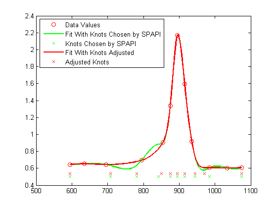
Or else, simply try the standard cubic spline interpolant, supplied by csapi. This amounts to a slightly different choice of knots.
autocs = csapi(tau, y); plot(tau, y, 'ro') hold on fnplt(autocs,'c') hold off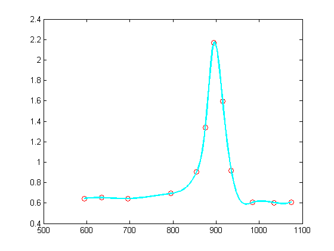
With such rapidly-varying data, it is hard to get agreement among all reasonable interpolants, even if each of them is a cubic spline. The plot below shows all five interpolants, for comparison.
plot(tau, y, 'ro') hold on fnplt(sp,'k',tau([1 end])) % black: original fnplt(sp2,'b',tau([1 end])) % blue: with special end conditions fnplt(autosp,'g') % green: automatic knot choice by SPAPI fnplt(autocs,'c') % cyan: automatic knot choice by CSAPI fnplt(adjsp,'r',2) % red: knot choice by SPAPI slightly changed hold off legend({'Data Values' 'Original Fit' 'Special End Conditions' ... 'With Knots Chosen by SPAPI' 'With Knots Chosen by CSAPI' ... 'With Adjusted Knots'},'location','NW')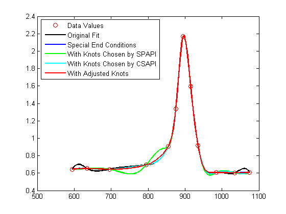